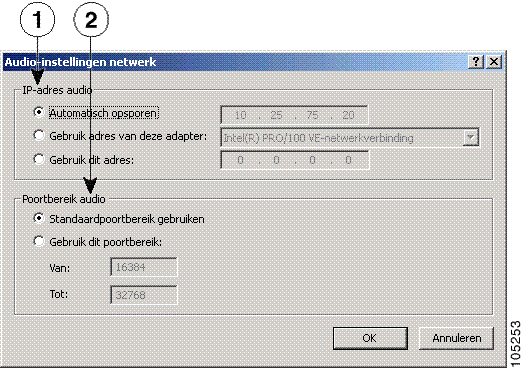

Audio-instellingen netwerk
U kunt het venster Audio-instellingen netwerk openen met Alt + S > Audio > Netwerk of klik met de
rechtermuisknop > Voorkeuren > Audio > Netwerk.

|
Nr.
|
Item
|
Beschrijving
|
|
1
|
Gebied IP-adres audio
|
De standaardinstelling voor dit gedeelte is Automatisch
opsporen. Pas deze instelling alleen aan als de
systeembeheerder u dit vraagt.
|
|
2
|
Gebied Poortbereik audio
|
De standaardinstelling voor dit gedeelte is Standaardpoortbereik
gebruiken. Pas deze instelling alleen aan als de
systeembeheerder u dit vraagt.
|
Opmerking De netwerkaudio-instellingen in de bovenstaande illustratie zijn voorbeelden.
Verwante onderwerpen
Copyright © 2003-2006, Cisco Systems, Inc. Alle rechten voorbehouden.